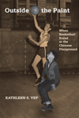

|
The Americanization of Social Science
Intellectuals and Public Responsibility in the Postwar United States
Haney, David Paul
A controversial explanation for sociology's isolation from American society
New in Paperback!
296 pp • 6x9 • Spring 2009
paper 978-1-59213-714-5
cloth 978-1-59213-713-8 |
|
Contemporary Chinese America
Immigration, Ethnicity, and Community Transformation
Zhou, Min
A sociologist of international migration examines the Chinese American experience
328 pp • 6x9 • Spring 2009
paper 978-1-59213-858-6
cloth 978-1-59213-857-9 |
|
The Coolie Speaks
Chinese Indentured Laborers and African Slaves in Cuba
Yun, Lisa
A remarkable examination of bondage in Cuba that probes questions of slavery, freedom, and race
New in Paperback!
336 pp • 6x9 • Spring 2009
paper 978-1-59213-582-0
cloth 978-1-59213-581-3 |

|
Creolizing Contradance in the Caribbean
edited by Manuel, Peter
How contradance and quadrille gave rise to merengue, danzón and other popular Creole dances
288 pp • 6x9 • Spring 2009
cloth 978-1-59213-734-3 |
|
The Cubans of Union City
Immigrants and Exiles in a New Jersey Community
Prieto, Yolanda
Ethnic community building and immigrant success in "Havana on the Hudson"
224 pp • 6x9• Spring 2009
paper 978-1-59213-300-0
cloth 978-1-59213-299-7 |

|
The Dance of Politics
Gender, Performance, and Democratization in Malawi
Gilman, Lisa
How gender and class intersect in Malawi through women's roles as political praise performers
268 pp • 6x9 • Spring 2009
cloth 978-1-59213-985-9
|
|
Demanding Respect
The Evolution of the American Comic Book
Lopes, Paul
From pulp comics to Maus, the story of the growth
of comics in American culture
260 pp • 6x9 • Spring 2009
paper 978-1-59213-443-4
cloth 978-1-59213-442-7
|
|
Economies of Desire
Sex and Tourism in Cuba and the Dominican Republic
Cabezas, Amalia L.
Money, sex, and love: Are they merely "market forces" in transnational tourism?
232 pp • 5.5x8.25 • Spring 2009
paper 978-1-59213-750-3
cloth 978-1-59213-749-7 |
|
The End of White World Supremacy
Black Internationalism and the Problem of the Color Line
Bush, Roderick
How the marginalization of African Americans turned into a social phenomenon for the nation and world
264 pp • 6x9 • Spring 2009
paper 978-1-59213-573-8
cloth 978-1-59213-572-1 |
|
Filling the Ark
Animal Welfare in Disasters
Irvine, Leslie
The fate of animals in disasters depends on practical solutions informed by compassion and common sense
176 pp • 5.5x8.25 • Spring 2009
cloth 978-1-59213-834-0
|
|
Interfaith Dialogue at the Grass Roots
Mays, Rebecca Kratz
Can interreligious dialogue make a difference?
142 pp • 6x9 • Spring 2009
paper 978-0-931214-11-0
|
|
Ladies and Gents
Public Toilets and Gender
edited by Gershenson, Olga and Barbara Penner
Talking about toilets—in all their material, social, symbolic and discursive complexity
262 pp • 6x9 • Spring 2009
paper 978-1-59213-940-8
cloth 978-1-59213-939-2 |

|
Live Wire
Women and Brotherhood in the Electrical Industry
Moccio, Francine A.
Sisters of The Brotherhood struggle for equality
288 pp • 6x9 • Spring 2009
cloth 978-1-59213-737-4
|
|
Material Law
A Jurisprudence of What's Real
Brigham, John
How law defines people, places, and things
240 pp • 6x9 • Spring 2009
cloth 978-1-59213-964-4
|
|
Mobilizing Science
Movements, Participation, and the Remaking of Knowledge
McCormick, Sabrina
What forces are needed for social change in a knowledge society?
218 pp • 5.5x8.25 • Spring 2009
cloth 978-1-4399-0009-3
|
|
Música Norteña
Mexican Migrants Creating a Nation Between Nations
Ragland, Cathy
The first history of the music that binds together Mexican immigrant communities
268 pp • 6x9 • Spring 2009
paper 978-1-59213-747-3
cloth 978-1-59213-746-6
|

|
Nature in Common?
Environmental Ethics and the Contested Foundations of Environmental Policy
edited by Minteer, Ben A.
A groundbreaking contribution to a central debate in environmentalism
312 pp • 7x10 • Spring 2009
paper 978-1-59213-704-6
cloth 978-1-59213-703-9
|
|
A New Brand of Business
Charles Coolidge Parlin, Curtis Publishing Company, and the Origins of Market Research
Ward, Douglas B.
How a dominant magazine publisher developed the business of market research
240 pp • 5.5x8.25 • Spring 2009
cloth 978-1-4399-0015-4
|
|
Objectifying Measures
The Dominance of High-stakes Testing and the Politics of Schooling
Johnson, Amanda Walker
Examining the political economy of high-stakes testing
222 pp • 5.5x8.25 • Spring 2009
paper 978-1-59213-906-4
cloth 978-1-59213-905-7 |
 |
Outside the Paint
When Basketball Ruled at the Chinese Playground
Yep, Kathleen S.
Breaking out of Chinatown by shooting and dribbling
216 pp • 5.5x8.25 • Spring 2009
cloth 978-1-59213-942-2
|
|
Pictures from a Drawer
Prison and the Art of Portraiture
Jackson, Bruce
A remarkable collection of prison "portraiture" photos
192 pp • 7x10 • Spring 2009
paper 978-1-59213-949-1
cloth 978-1-59213-948-4 |

|
Rave Culture
The Alteration and Decline of a Philadelphia Music Scene
Anderson, Tammy L.
Exposing the forces behind the decline of the rave scene in Philadelphia and elsewhere
240 pp • 6x9 • Spring 2009
paper 978-1-59213-934-7
cloth 978-1-59213-933-0 |
|
Runaway Romances
Hollywood's Postwar Tour of Europe
Shandley, Robert R.
How Hollywood's European travelogues chronicled Americans' self-discovery
234 pp • 6x9 • Spring 2009
cloth 978-1-59213-945-3
|
|
The Teacher's Attention
Why Our Kids Must and Can Get Smaller Schools and Classes
Delavan, Garrett
Reframing the goals of school reform
244 pp • 6x9 • Spring 2009
paper 978-1-59213-894-4
cloth 978-1-59213-893-7
|
|
Tomboys
A Literary and Cultural History
Abate, Michelle Ann
The history of the shifting image of the tomboy in popular culture
New in Paperback!
338 pp • 6x9 • Spring 2009
paper 978-1-59213-723-7
cloth 978-1-59213-722-0
|
|
The Transnational Politics of Asian Americans
edited by Collet, Christian and Pei-te Lien
Foreword by Don Nakanishi
Asian Americans as a force for political change on both sides of the Pacific
252 pp • 6x9 • Spring 2009
paper 978-1-59213-861-6
cloth 978-1-59213-860-9 |
|
Tyranny of the Minority
The Subconstituency Politics Theory of Representation
Bishin, Benjamin G.
Why do special interests defeat the people's will in American politics?
216 pp • 6x9 • Spring 2009
cloth 978-1-59213-658-2
|
|
The Unheard Voices
Community Organizations and Service Learning
edited by Stoecker, Randy and Elizabeth A. Tryon
Community organizations reveal what service learning is—and what it should be
232 pp • 5.5x8.25 • Spring 2009
paper 978-1-59213-995-8
cloth 978-1-59213-994-1 |
|
Wheelchair Warrior
Gangs, Disability, and Basketball
Juette, Melvin, Ronald J. Berger
The remarkable story of a disabled man’s struggle to make a productive life for himself
New in Paperback!
192 pp • 5.5x8.25 • Spring 2009
paper 978-1-59213-475-5
cloth 978-1-59213-474-8 |
Click here
to download the catalog (pdf). |